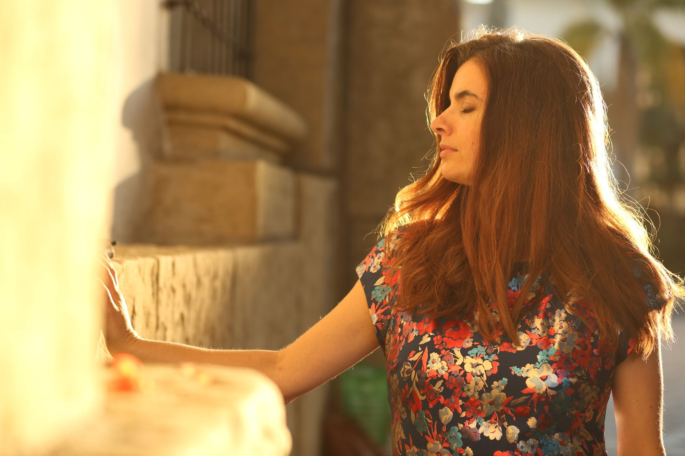
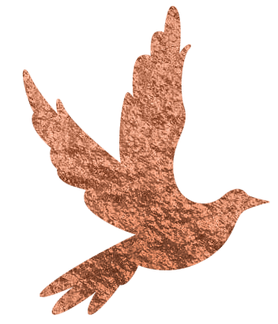
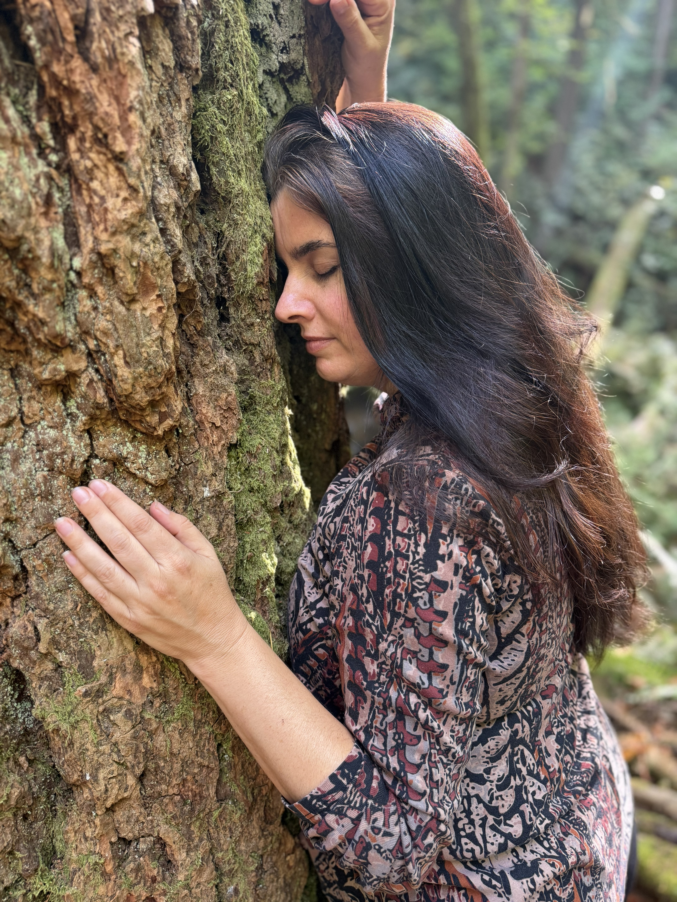
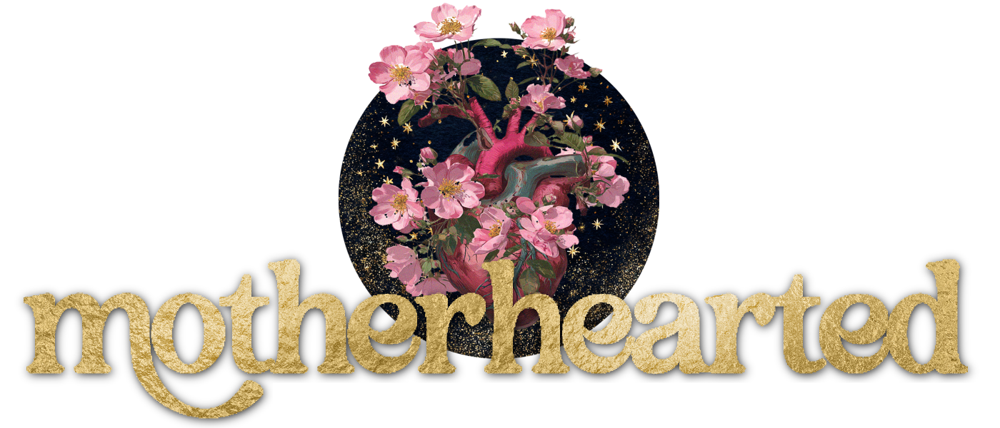
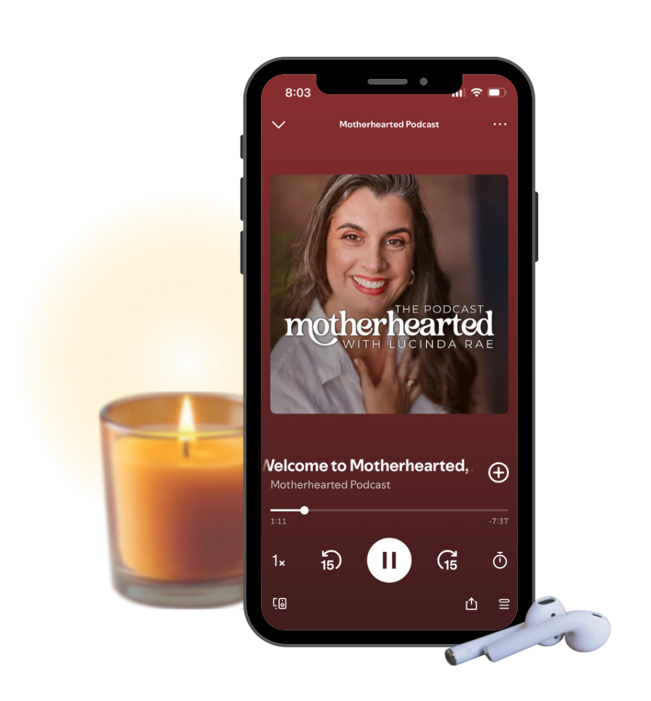
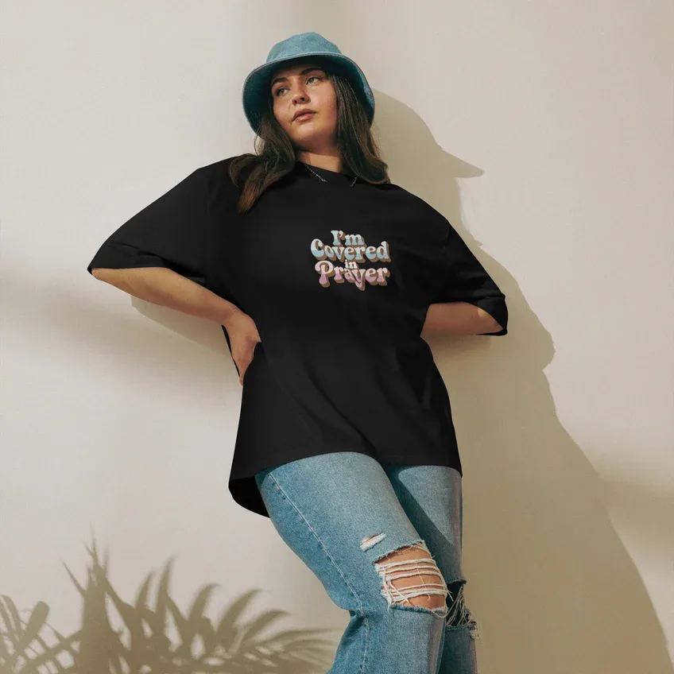
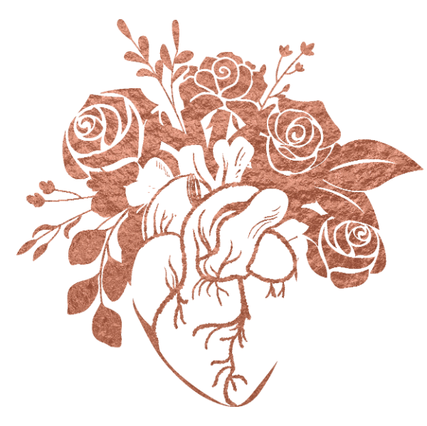

When your child is in crisis, your heart needs tending too.
Mental illness, addiction, incarceration. I have walked each of these beside my own children. Motherhearted is a soft place to land: faith, ritual and honest company on the road from self-sacrifice back to self-restoration.

Hi, I'm Lucinda Rae.
I've walked this road too. I spent years pouring myself out for my children through seasons I never imagined: hospital rooms, relapse, a courtroom, a prison visiting hall. Somewhere along the way there was very little of me left. Motherhearted grew from that empty place, a way back to grace, to my own body, and to the God who never stopped holding me.
Now I write, podcast, pray, and blend anointing oils for mothers walking the same road. Some of what I share is tender and hard. All of it is honest.
We are dedicated to healing the heart of motherhood by guiding mothers from self-sacrifice to self-restoration. Through spiritual renewal and soul-nourishing creative rituals, we help mothers reclaim their inner strength. Every mother deserves the grace of restoration, the wisdom of self-love, and the courage to thrive, not just for her family but for herself.

From my heart to yours.
I write and podcast with my heart on my sleeve, healing the heart of my own motherhood in real time. If you are loving a child, young or grown, through mental illness, addiction or incarceration, you are not alone here. Pull up a chair.

From self-sacrifice to self-restoration.
A guided journey for the mother who has given everything. Gentle teachings, creative ritual and prayer to help you restore what motherhood has asked of you, at your own pace.
Enroll in the courseMotherhearted, the podcast.
Light a candle, pour something warm, and stay a while. Honest conversations on faith, grief, healing and the holy work of mothering yourself.

Wear your faith. Let it hold you.
Oversized, heavyweight tees carrying the words we need to remember: you are covered, you are held, you are enough. For hard mornings, long drives and visiting days, a reminder worn close to your heart.


The Matriarchetype QuizWhich matriarch is blessing you?
Discover your anointing oil and the motherly qualities the matriarchs of old can pour into your life right now.
Take the quizFeeling calm, grounded & home in myself.
The little things that bring me back to center: what I reach for, what I sip, what I keep by my bed. My feel-good favorites, all in one place.
Holy oils, daily ritual & prayer
Everything you need to return to yourself and remember the light God placed within you.
Four books, one heart.
Each one grew from the same ground: loving my children through the hardest seasons, and finding my way back to myself. Subscribers get the first peeks inside every one.